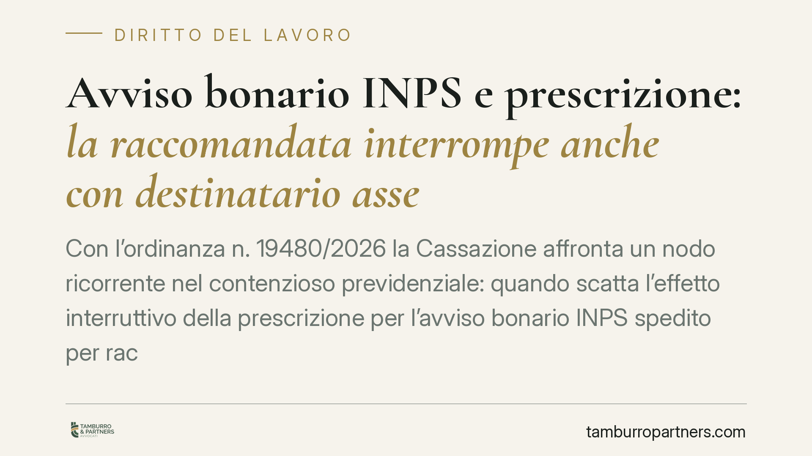

Avviso bonario INPS e prescrizione: la raccomandata interrompe anche con destinatario assente
Con l'ordinanza n. 19480/2026 la Cassazione affronta un nodo ricorrente nel contenzioso previdenziale: quando scatta l'effetto interruttivo della prescrizione per l'avviso bonario INPS spedito per raccomandata e non consegnato. La risposta rileva la data dell'avviso di giacenza, non quella di maturazione della compiuta giacenza, con conseguenze dirette sui termini di difesa del datore di lavoro.

Il caso
La questione è semplice nella forma, meno nella sostanza. L'INPS spedisce al datore di lavoro un avviso bonario per recuperare contributi non versati. La raccomandata, però, non viene consegnata: il destinatario è assente e l'ufficio postale lascia l'avviso di giacenza.
Da quel momento decorrono i dieci giorni previsti dalla L. 890/1982 per gli atti notificati a mezzo posta. Ma l'avviso bonario non è un atto impositivo in senso proprio: è un atto stragiudiziale con cui l'ente invita al pagamento. La domanda è quindi: l'effetto interruttivo della prescrizione si produce alla data dell'avviso di giacenza oppure solo dopo il decorso dei dieci giorni?
Inquadramento normativo
Il riferimento è l'art. 1335 c.c., che disciplina la presunzione di conoscenza degli atti unilaterali recettizi. La norma stabilisce che la dichiarazione diretta a una persona si reputa conosciuta nel momento in cui giunge all'indirizzo del destinatario, salvo prova dell'impossibilità incolpevole di averne notizia.
La Cassazione, Sezione Lavoro, con l'ordinanza n. 19480/2026 distingue nettamente due regimi. Da un lato, gli atti impositivi tributari, per i quali opera la disciplina della L. 890/1982 e la "compiuta giacenza" a dieci giorni. Dall'altro, gli atti stragiudiziali come l'avviso bonario, soggetti alla regola generale dell'art. 1335 c.c.
Per questi ultimi, l'atto si considera giunto a conoscenza del destinatario — e quindi interrompe la prescrizione — nel momento in cui perviene all'indirizzo, documentato dall'avviso di giacenza rilasciato dall'agente postale. Non occorre attendere il perfezionamento della compiuta giacenza.
Perché la distinzione conta
La differenza non è teorica. I crediti contributivi INPS sono soggetti a prescrizione quinquennale. Individuare con precisione la data interruttiva significa stabilire se il diritto dell'ente è ancora azionabile o già estinto.
Se l'interruzione si collega all'avviso di giacenza, l'INPS guadagna qualche giorno rispetto al momento della compiuta giacenza. In situazioni al limite della scadenza del quinquennio, quei giorni possono decidere l'esito della lite.
La pronuncia, inoltre, consolida un principio: l'onere di superare la presunzione dell'art. 1335 c.c. grava sul destinatario. È il contribuente a dover provare di essere stato, senza propria colpa, nell'impossibilità di avere notizia dell'atto. Non basta affermare l'assenza materiale dall'indirizzo al momento del passaggio del portalettere.
Implicazioni pratiche per il datore di lavoro
Chi riceve un avviso bonario INPS deve considerare due piani.
Il primo riguarda la gestione dell'indirizzo. Mantenere aggiornate le risultanze anagrafiche e la sede legale è essenziale: la presunzione di conoscenza si ancora all'indirizzo del destinatario, non alla sua effettiva presenza fisica.
Il secondo riguarda il calcolo della prescrizione in sede difensiva. Prima di eccepire l'estinzione del credito contributivo, occorre verificare con esattezza la data riportata sull'avviso di giacenza postale, perché è quella — e non la compiuta giacenza — a segnare l'interruzione per gli avvisi bonari.
Attenzione anche alla riqualificazione dell'atto: non ogni comunicazione INPS ha la stessa natura. La linea di confine tra atto stragiudiziale e atto impositivo determina il regime applicabile e va valutata caso per caso.
Cosa fare in concreto
- Verificate la natura dell'atto ricevuto: distinguete l'avviso bonario (stragiudiziale) dagli atti impositivi veri e propri, perché cambiano le regole sull'interruzione della prescrizione.
- Recuperate l'avviso di giacenza postale e controllate la data esatta: è il riferimento per gli avvisi bonari ai sensi dell'art. 1335 c.c.
- Ricostruite la cronologia dei crediti contributivi per stabilire se il quinquennio è decorso rispetto alla reale data interruttiva.
- Documentate ogni eventuale impossibilità incolpevole di ricezione: senza prova concreta la presunzione di conoscenza resta ferma.
- Aggiornate tempestivamente sede legale e recapiti presso i registri e gli enti, per evitare contestazioni sulla regolarità dell'indirizzo.
La pronuncia conferma un orientamento rigoroso sul piano della conoscibilità degli atti recettizi. Consigliamo di esaminare la posizione contributiva con anticipo, senza attendere la fase cautelare o esecutiva, quando i margini difensivi si restringono.
---
*Contributo informativo a cura di Tamburro & Partners - Avv. Giuseppe Tamburro. Non costituisce parere legale.*
Ogni storia di lavoro ha i suoi tempi.
Se gestisci HR e vuoi un confronto su contenzioso, ispezioni o licenziamenti, scrivi allo studio. Ti rispondiamo entro un giorno lavorativo.